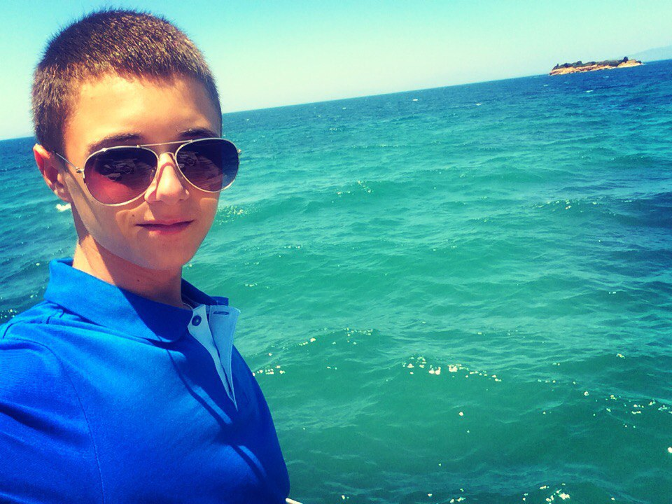

|  | Матвей СобакинРост модели: 163 см
Вес модели: 44 кг
Глаза: карие
Цвет волос: лысый
О модели: Замужем за Лизонькой, готов к экспериментам (и экскрементам). Люблю качалку, Ландан сици, шуршать фантиками на матане, айфоны и кашку "минутка". Встаю в 6:45 утра чтобы помазать кефиром кроссы. Люблю русский реп, елджеичя и тимати вердум фортум. Консультант орефлеим(мтс)(подключайте пажалуста интернет). Жужжу феном по утрам вместо петуха, моюсь полгода. Хотелось бы жить в Америке на постоянной основе, заберите меня отсюда!
p.s. sivukhiiiiin sabaaaaaaaaaaaaaaaaka |